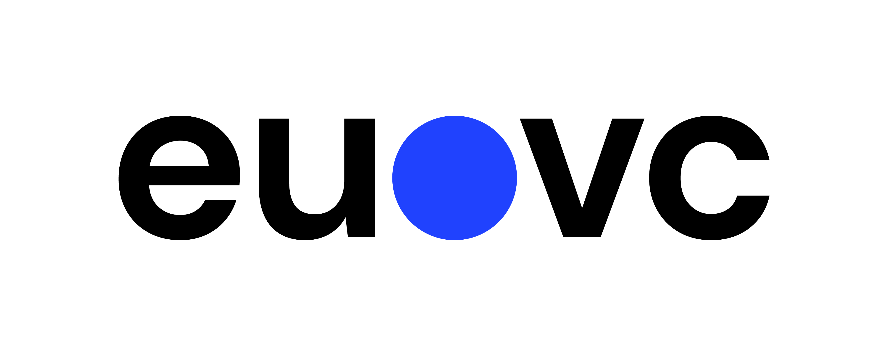

Corporate Venture Mastermind
A 3-month peer cohort for CVC professionals who operate at the intersection of two worlds, and are fully understood by neither.
Pre-Apply Now
CVC investors are fully understood by neither world.
Independent VCs don't face what they face. Their colleagues inside the corporate don't understand it either. The result: a specific, recurring set of challenges that CVC professionals carry largely alone.
A peer group that genuinely understands this context, with no corporate agendas, no competitive overlap, and no performance, does not yet exist. We've designed this program to be that.
A Tightly Curated Cohort
For us, curation is not a nice-to-have. It's the product. Every member must be able to speak freely, which means the room has to be right.
Managing an Active Portfolio
CVC principals, directors, and VPs with hands-on portfolio responsibilities and real investment decisions to make.
Navigating Mandate & Alignment
Investors navigating mandate definition or managing internal stakeholder alignment with the parent corporation.
Seeking Peer Thinking
CVCs looking for peer perspective outside their corporate bubble, with no competitive overlap by sector or parent company.
Everything You Need to Navigate the CVC Role
Bi-Weekly Group Sessions
The format alternates between two session types, each designed around what the cohort actually needs.
- Hotseat sessions: one member brings their most pressing challenge; the group engages without hierarchy or judgment
- Expert sessions: guest facilitators from LP, corporate innovation, and ecosystem networks; topics chosen by the cohort
Hotseat Coaching
Dedicated time on your specific challenge: a confidential board without hierarchy or politics. The facilitator holds the space. No generic frameworks, no theory. Real thinking on what's actually keeping you up at night.
Expert Sessions
Guest facilitators from LP, corporate innovation, and ecosystem networks. Topics chosen around what the cohort actually needs, not a generic VC curriculum. Select guests from the EU.vc network.
1:1 On-Call Coaching
Available between sessions for high-stakes moments and decisions. Because timing matters when you're navigating something that can't wait until the next group call.
London In-Person Day
One full day for the cohort in September: deeper work, relationship building, and a guest session. This is the emotional core of the program, where the peer relationships that last beyond the cohort are built.
3-Month Program Structure
Kick-off session · 2× bi-weekly group calls (1 hotseat · 1 expert session)
2× bi-weekly calls · expert session · 1-day in-person event, London · the emotional core of the program
2× bi-weekly calls · hotseat coaching · closing session
What CVC Professionals Have Told Us They Need Most
-
A confidential board with no corporate agenda The single biggest pull. CVCs cannot speak freely with internal colleagues. They cannot be candid with independent VC co-investors who have different incentives. They rarely find peers they can be fully honest with. This program creates that room, and protects it.
-
The internal politics dimension, finally named No independent VC program covers this. How do you manage upward to a CFO who doesn't understand J-curves? How do you protect a portfolio company from a business unit that sees it as a threat? How do you keep your unit alive through a restructuring? These are the questions that actually keep CVC investors up at night.
-
Expert perspectives from both sides of the table CVCs need to understand how LPs evaluate them through the lens of the parent corporation, how independent VCs perceive them as co-investors, and how portfolio founders experience them. Expert sessions are curated around these specific lenses, not a generic VC curriculum.
-
Peer relationships that outlast the program The in-person day in London is not a bonus. It is where the cohort becomes a real peer network. For CVC investors who are often isolated inside their corporate bubble, this is disproportionately valuable.
Why Not Everyone Gets In
This only works if people can speak freely. That requires strict confidentiality and zero competitive overlap.
- Confidentiality is non-negotiable
- No direct competitive overlap, by sector or parent company
- A shared commitment to candor, transparency and contribution
- Willingness to be challenged
- Maximum 8 members per cohort. Curation is the product
Built on a running model.
The CVC Mastermind is adapted from the Emerging Manager Mastermind, a peer cohort for first and second-time fund managers, currently in Cohort 1 with six participants. The format, facilitation approach, and hotseat methodology are proven.
The CVC program applies the same model to a distinct audience with its own specific challenges. Same structure. Different room. Built for CVC, not repurposed from it.
Led by Practitioners, Not Theorists

Anieke Lamers
The VC Coach
15+ years in venture. Founder of The VC Coach. Currently facilitating Cohort 1 of the Emerging Manager Mastermind, the program the CVC cohort is built on. Anieke brings deep VC expertise and a human-centered coaching approach, creating a space where investors can tackle strategic, operational, and personal challenges openly.
Liliana Negrila
Coach & Facilitator
Coach and facilitator working with fund managers and investors on the human dynamics of the role. Advisory work with VC funds on fundraising strategy and LP engagement. Liliana brings a deep understanding of the interpersonal and organisational challenges that define the CVC experience.

David Cruz e Silva
Guest Expert · Co-founder & Host, EU.VC
Co-founder of EU.VC, Europe's go-to platform for venture capital insights. Through hundreds of conversations with GPs, LPs and CVC practitioners, David has built one of the most comprehensive vantage points on how corporate venture teams operate, raise mandates, and navigate the European ecosystem. He brings that network and pattern recognition directly into the CVC cohort.
LinkedIn → (opens in a new tab)Everything Included
A complete 3-month program designed for meaningful transformation, with no hidden fees and no upsells.
- Bi-weekly facilitated group sessions
- Hotseat coaching (dedicated challenge board)
- Expert sessions with guest facilitators
- 1:1 coaching on-demand between sessions
- 1-day in-person gathering, London (September)
Pilot cohort applications open. Secure your spot
Ready to Find Your People?
The CVC Mastermind pilot cohort launches August 2026. Pre-apply now to secure your spot.
Pre-Apply Now